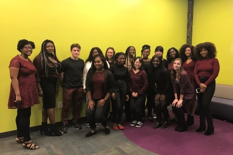
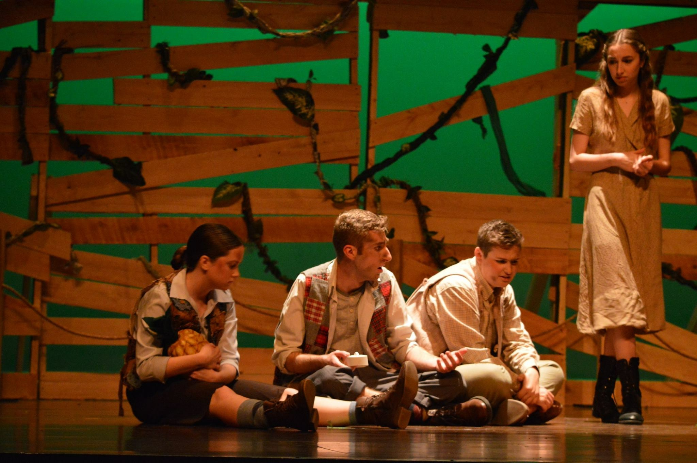

My Academics
I am a second semester junior at the University of Massachusetts, Amherst, looking forward to starting my next great adventure: a professional career! As an English major with minors in both Italian Studies and History, I have a strong background in the humanities, but my certificate in Professional Communication and Technical Writing has given me the opportunity to work with more logic-based technological fields.
My Work Experience
I have had a variety of jobs, from nanny to assistant-manager of a local violin store. While working in the store, I was able to develop professional communication and contract-writing skills, as well as learn how to handle demanding customers (something I also got to work on as a nanny). I've also had experience in more physical fields, working with advanced lighting and sound equipment in UMass's Fine Arts Center. You can see more about my previous work experience on my resume or LinkedIn.
My Outside Interests
I am currently the secretary for the UMass Gospel Choir and have been a member of the UMass Theatre Guild, either on and off stage, for every semester that I've attended UMass. At home, I write, play, and produce my own music, primarily for myself, using my voice, violin, keyboard, electric bass, and music production software, taking advantage of the skills I gained from being in a jazz and rock band before I started my college career.
In my free time, I like to walk my three dogs, read (particularly Victorian literature), and watch mass quantities of British television shows, from Broadchurch to 8 out of 10 Cats Does Countdown.
 Left: the UMass Gospel Choir after a concert for incoming students. Right: the UMass Theatre Guild's production of Peter and the Starcatcher.